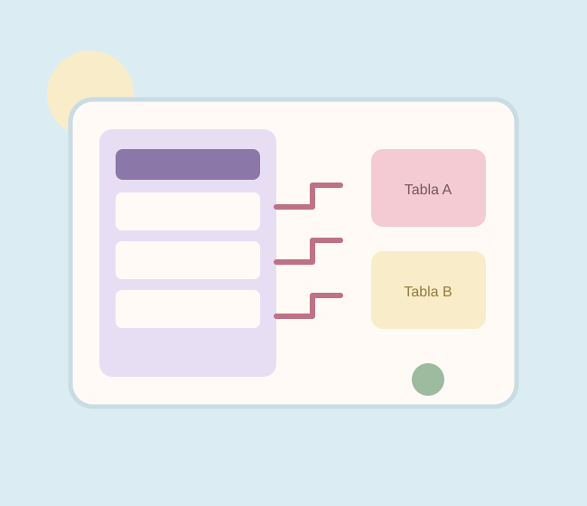

Servicios · Área 02
Bases de datos.
Detrás de una aplicación también existe información que necesita estar organizada, relacionada y disponible cuando se requiere.

Datos con estructura y sentido
Me interesa comprender cómo se modela la información que utiliza un sistema. En mis prácticas he trabajado con registros, consultas y persistencia local para conservar datos entre sesiones de una aplicación.
Al desarrollar esta parte de un proyecto, considero importante definir qué información se necesita, cómo se relaciona y qué operaciones se realizarán para consultarla, actualizarla o eliminarla.
Modelado básicoSQLiteRoomOperaciones CRUDIntegridad de datos